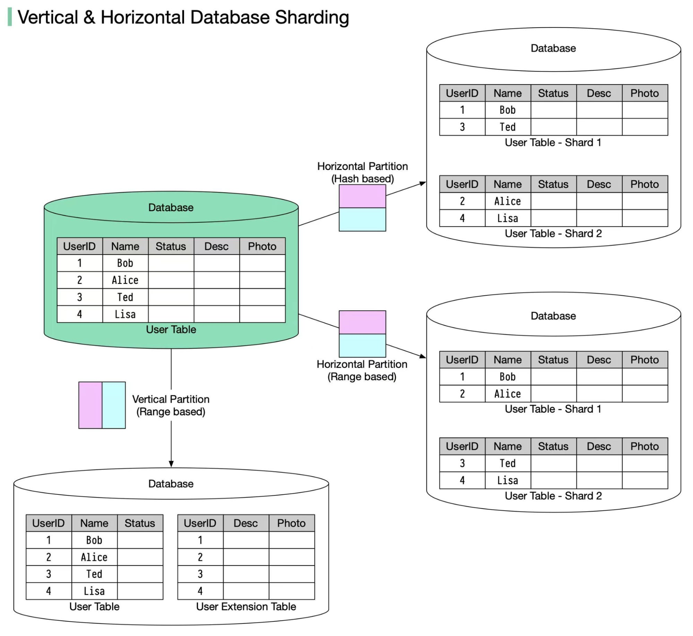

System Design Mastery
Master scalable systems with premium insights
🔀 Database Sharding: Scaling Data Horizontally
1️⃣ What is Database Sharding?
Database Sharding is the process of splitting a large database into smaller pieces (shards) and storing them on multiple servers.
Key Concept:
Each shard holds only a subset of the data.
Example:
- 👥 Users with ID 1–1M → Shard A
- 👥 Users with ID 1M–2M → Shard B

2️⃣ Why Does Sharding Exist?
Sharding exists to solve database scalability limits.
Problems with single databases:
- 💾 Have CPU, memory, storage limits
- 🐌 Become slow with massive data
- ⚖️ Can't handle high write traffic
Sharding helps by:
- 📊 Distributing data
- ⚖️ Distributing load
- 📈 Allowing horizontal scaling
3️⃣ What Breaks Without It?
Without sharding at large scale:
- 🐌 Queries become slow
- 💾 Storage limits are reached
- ❌ Scaling becomes impossible
📌 Real-World Example:
One database handling 100M users → slow queries → system outages ❌
4️⃣ When to Use Sharding / When NOT to Use
✅ When to Use Sharding:
- 🌍 Very large datasets
- ⚖️ High write traffic
- 👥 Millions of users
❌ When NOT to Use:
- 📦 Small databases
- 🔇 Low traffic apps
📌 Important: Sharding adds complexity — don't use it early. Start simple, then shard when you actually need it.
5️⃣ One Common Mistake
🚨 Choosing a Bad Shard Key
A bad shard key causes:
- 📊 Uneven data distribution
- 🔥 Hot shards (one shard gets all traffic)
- ⚠️ Performance issues
Examples of Shard Keys:
❌ Bad Shard Key:
is_active = true/false
✅ Good Shard Key:
user_id, order_id, region_id
6️⃣ Real App Connections
🛒 E-commerce
- 👥 Users sharded by user_id
- 📦 Orders sharded by order_id
💬 Social Media
- 📝 Posts sharded by user_id
- 💬 Messages sharded by conversation_id
💳 Payments
- 💰 Transactions sharded by region
- 🔐 Transactions sharded by account_id
📌 Remember: Sharding is usually the last step, not the first. Exhaust other scaling options before sharding.
7️⃣ Types of Sharding (Important)
🔹 Horizontal Sharding (Most Common)
Split rows: Each shard has different rows, but same columns.
When to use:
- Very large number of users
- Read & write traffic is high
- Need unlimited scalability
✅ Pros:
- Scales very well
- No size limit
- Used by big companies
❌ Cons:
- Complex queries
- Joins across shards are hard
One line: Horizontal sharding = split rows to scale.
🔹 Vertical Sharding
Split columns: Each shard has different columns.
When to use:
- Some columns used more frequently
- Large or heavy columns (images, blobs)
- Want better performance
✅ Pros:
- Faster access for common data
- Reduces table size
❌ Cons:
- Not great for huge scale
- Needs joins across databases
One line: Vertical sharding = split columns to optimize.

🧠 Simple Rule to Remember:
📈 Too many users
↓
Horizontal Sharding
📊 Too many columns
↓
Vertical Sharding
🌍 Real-World Usage:
- 📱 Facebook / Instagram: Horizontal sharding for billions of users
- 👤 User profile systems: Vertical sharding for heavy fields (photos, videos)
🎯 Summary
Database sharding is a horizontal scaling technique that partitions data across multiple databases to handle large data volumes and high traffic.
Horizontal sharding splits data by rows to scale with users. Vertical sharding splits data by columns to optimize access.
Choose your shard key wisely — a bad shard key will cause uneven distribution and create hot shards that become bottlenecks.
💡 Pro Tip: Tools & Technologies
Popular Sharding Solutions:
🗄️ Vitess
MySQL sharding and scaling middleware by YouTube.
🔄 Apache Cassandra
NoSQL database with built-in sharding capabilities.
⚙️ Citus Data
PostgreSQL extension for distributed sharding.
📊 MongoDB Sharding
Built-in sharding support for distributed document storage.
Best Practice: Plan your shard key strategy carefully before implementing sharding. Change shard keys later is extremely difficult. Use consistent hashing or range-based sharding depending on your access patterns.